本文章掛載硬碟是通用，因為作者是在 GCP 操作所以會多一個新增硬碟步驟
一、創建硬碟
到 Compute Engine → 磁碟
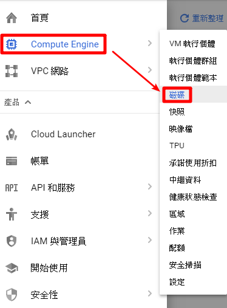
創建一個磁碟，注意：區域要設定跟 VM 同區，名稱不能跟 VM 一樣
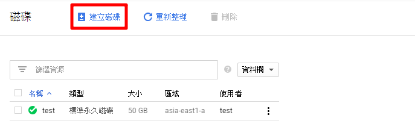
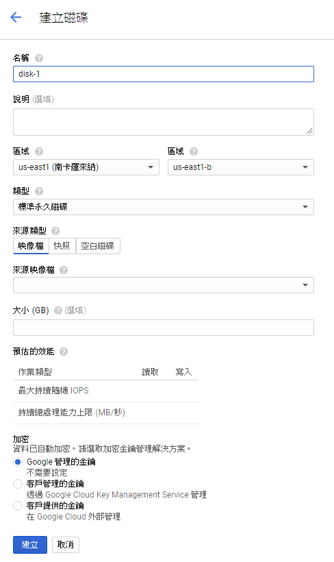
也可以用指令創建
注意：zone 要設定跟 VM 同區，名稱不能跟 VM 一樣
1 | gcloud compute disks create (名稱) --size=(容量) --zone (區域) |
輸出畫面
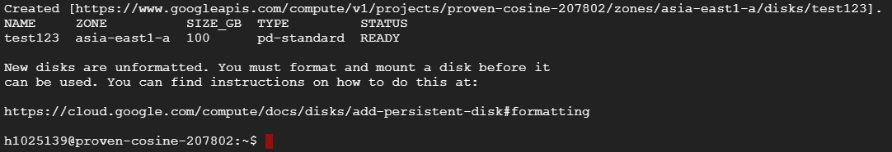
二、新增磁碟進使用中 VM
新增磁碟 GUI
進入 Compute Engine → VM 執行個體點選 VM 名稱 → VM 執行個體詳細資料 → 編輯
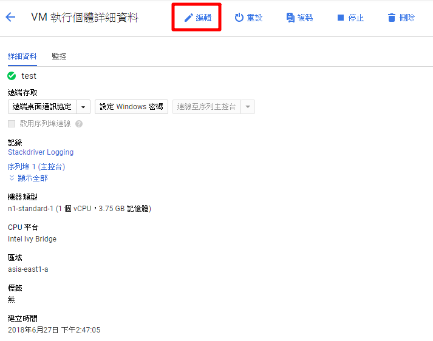
往下拉在其他磁碟新增硬碟
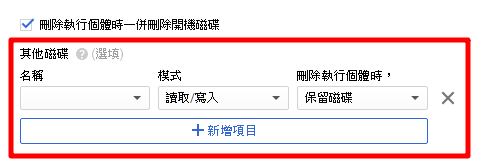
新增後如果要刪除硬碟到 Compute Engine → 硬碟，要刪除會顯示 “無法刪除以連結的磁碟”
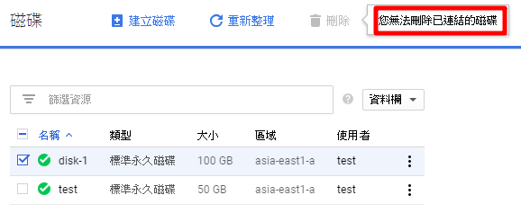
要到 VM 執行個體詳細資料 → 編輯，案 X 把硬碟移除才能刪除
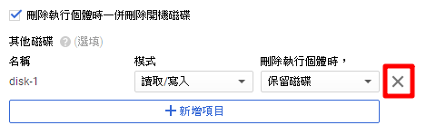
新增磁碟指令 ( 區域要跟 VM 相同不然會顯示錯誤 )
1 | gcloud compute instances attach-disk ( VM 名稱 ) --disk (創建磁碟的名稱) --zone (區域) |
輸出畫面
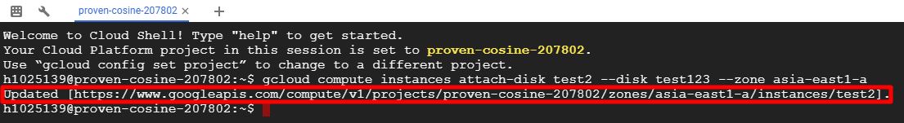
PS：可以到 Compute Engine → 磁碟，查看新增好的硬碟使用者會出現 VM 名稱
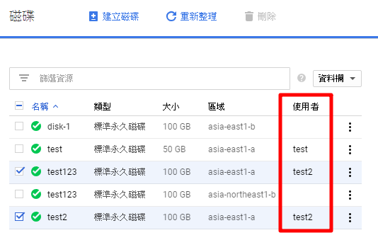
三、連線進入 VM 掛載 ( linux )
最高權限
1 | sudo su |
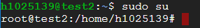
顯示主機上的硬碟
1 | ls /dev/[sh]d* |
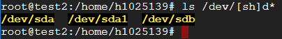
顯示新增硬碟資訊
1 | fdisk -l /dev/sdb |
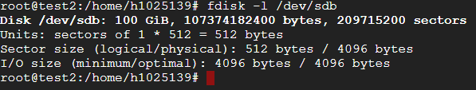
對 sdb 磁碟進行分割，輸入 m 顯示說明
1 | fdisk /dev/sdb |
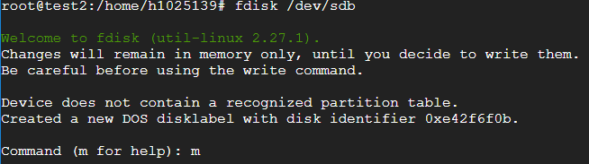
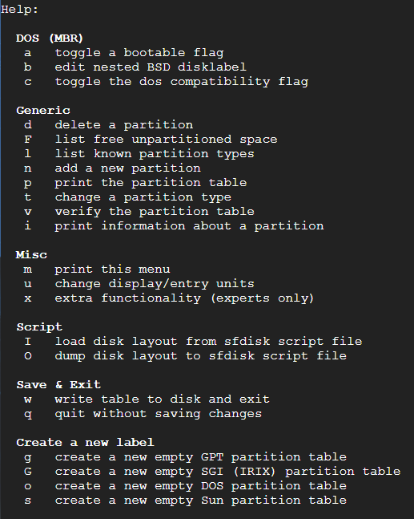
輸入 n 新增分割區，在輸入 p ( 硬碟全部只要一個分割區 )
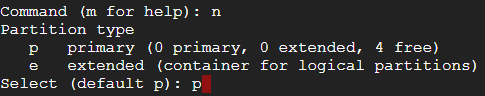
輸入 1 ( 磁碟代號 ) 按 Enter，按 Enter ( 起始磁區使用預設值 )，在按 Enter ( 最後磁區使用預設值 )
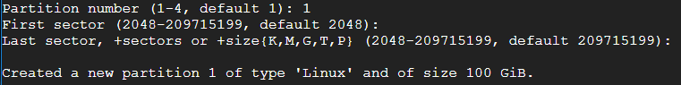
輸入 w ( 將分割表寫入磁碟後離開 )
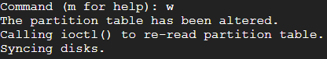
對 sdb1 磁碟做 ext4 格式化
1 | mkfs -t ext4 /dev/sdb1 |
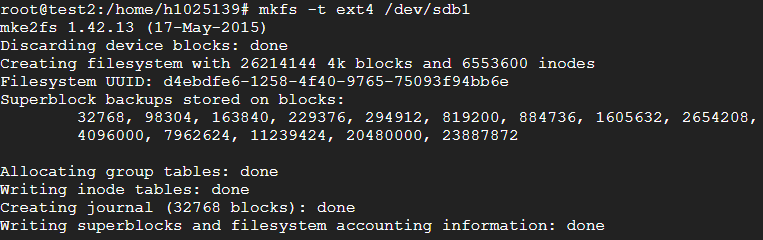
使用 UUID 掛載磁碟
列出所有磁碟的 UUID
1 | sudo blkid |
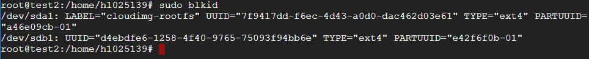
編輯 fstab 檔案，將要掛載硬碟的 UDID 填入，編輯後存檔重啟系統後就會自動掛載
1 | vim /etc/fstab |
UUID：填入需掛載磁碟的 UUID
/data：將此磁碟掛載到 /data 的路徑 ( 掛載前不會有 /data 掛載後會幫你建好 )
ext4：檔案系統類型
defaults：掛載時要使用的掛載參數
第一個 0：dump 會根據這個設定決定是否需要備份，一般設定為 0 即不備份；1 為每日備份；2 為隔日備份
第二個 0：fsck 會根據這個設定，決定在不正常關機後，檢查檔案系統的順序。根目錄要設定成 1 其他分割區設定成 2 如果設定成 0 則不會作 fsck 檢查
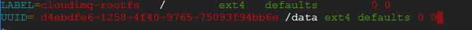
下個指令檢查一下，成功了
1 | df -h |
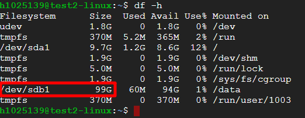
四、連線進入 VM 掛載 ( windows )
開始右鍵 → Disk Managment
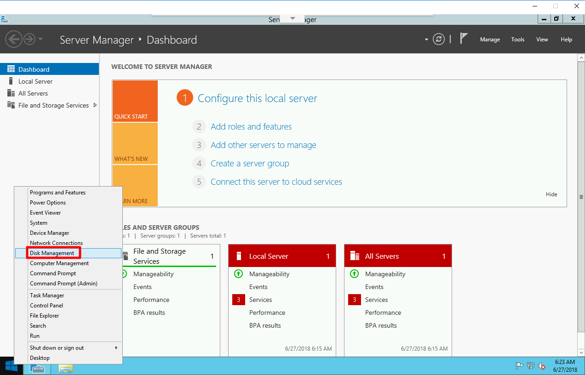
選擇 GPT 按 OK 後硬碟就會出現了
硬碟模式介紹：1. 傳統 BIOS/MBR 2. 新型 UEFI/GPT
傳統的硬碟分割都是用 MBR 分割，但 MBR 分割只支援 2TB 以下容量硬碟，所以 2TB 以上容量硬碟一定要 GPT 分割
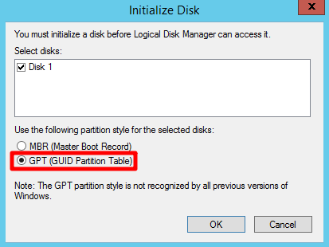
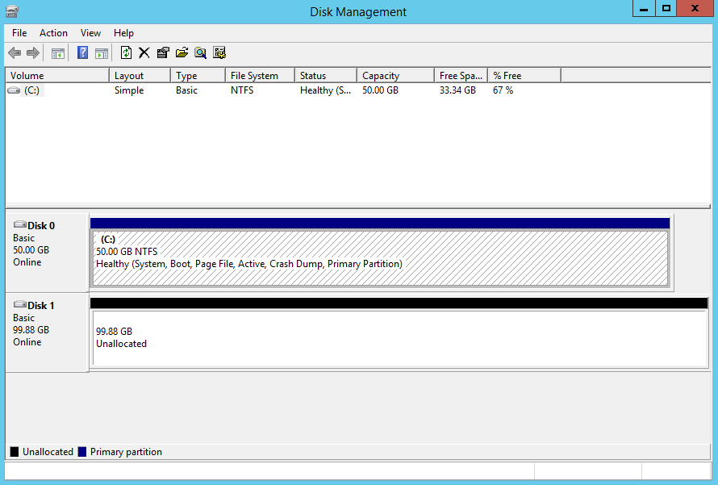
對新硬碟右鍵第一個選項
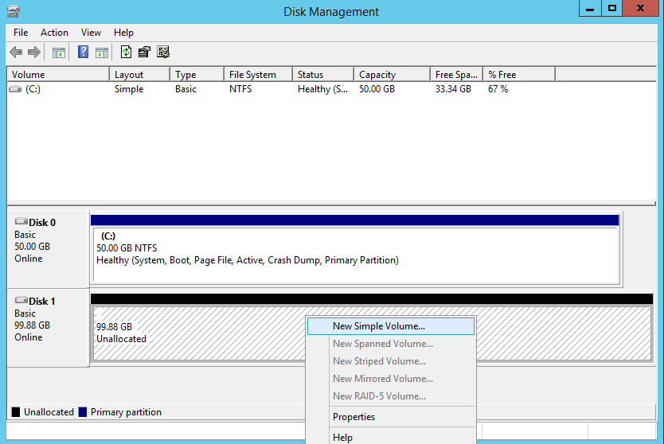
next 到底 ( 如果沒特別需求 )
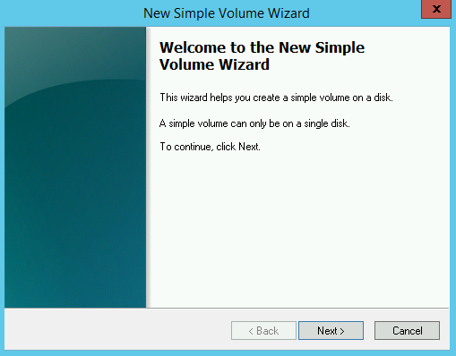
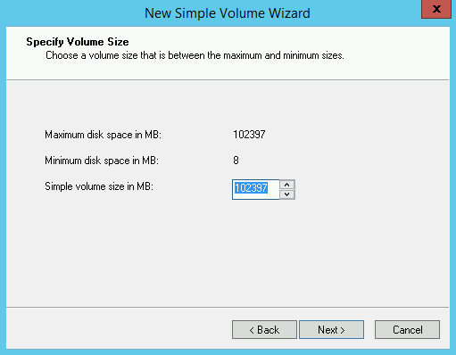
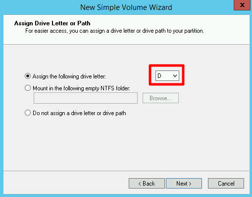
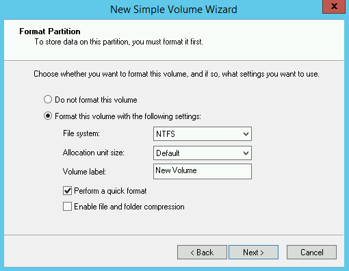
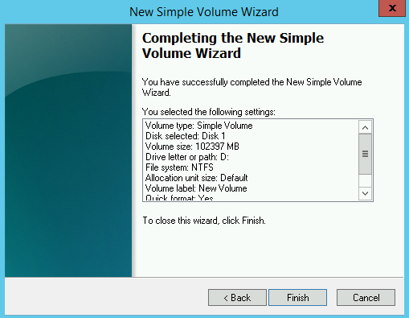
恭喜硬碟掛載完成！
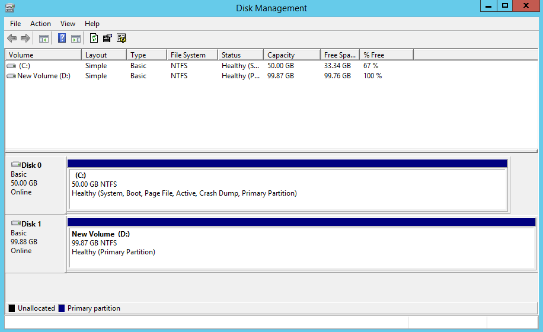